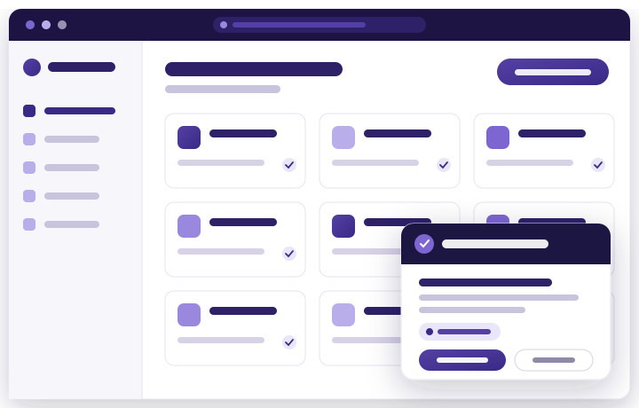

Access Manager
Every application behind one secure front door. Even the legacy ones.
SSO, adaptive MFA, passwordless and context-based policy across your entire estate — including the twenty-year-old applications other vendors pretend you don't have.

The problem
Your login perimeter has holes exactly where audits look
VPNs without MFA, legacy apps outside SSO, passwords on sticky notes, and no single log of who accessed what. Access Manager closes each of these — with one deployment.
Single Sign-On & federation
One login to everything — and one place to enforce policy.
Federate across SAML, OpenID Connect, OAuth2 and RADIUS. Employees sign in once and reach every entitled application; security teams get a single choke point for authentication policy and a single log of who accessed what.
- SAML 2.0, OIDC, OAuth2 and RADIUS out of the box
- RADIUS brings VPNs and network devices under the same policy engine
- Per-application session and assurance policies
Adaptive multi-factor authentication
Strong where it matters, invisible where it doesn't.
Six MFA methods — WebAuthn, push notification, TOTP, SMS OTP, email OTP and phone-call verification — orchestrated by policy. Routine access stays frictionless; sensitive applications and risky contexts step up automatically.
- WebAuthn passwordless: biometrics and FIDO2 hardware keys
- Push approval with real-time device alerts
- Per-app, per-role and per-context factor requirements
Context-based authentication
The login decision considers who, where, when — and anything else you can script.
Geolocation, IP range, time window and device signals feed every authentication decision. When built-in conditions aren't enough, write custom policies in Python — your logic, evaluated inline at login.
- Location, network, time and custom-signal policies
- Python-scriptable rules for anything the UI doesn't cover
- Step-up, allow, deny or notify as policy outcomes
Legacy application SSO
The apps every other vendor scopes out are the reason this feature exists.
A browser plugin delivers SSO to applications that will never speak SAML: credentials are vaulted, auto-filled at login and rotated automatically — users stop knowing passwords that shouldn't be known. MFA and context policies apply before the legacy login is released.
- Secure credential auto-fill on any web login form
- Automatic password rotation on your schedule
- Legacy access captured in the same audit trail as modern apps
Deep dive: SSO and MFA for legacy applications →
Directory & user management
Builds on the Active Directory you already run.
Real-time AD synchronisation, role-based access control mapped to your organisational structure, and self-service password reset that removes the single biggest helpdesk ticket category.
- Real-time Active Directory sync and secure credential routing
- RBAC aligned to departments, roles and applications
- Self-service password reset with policy-controlled verification
API security
The same identity rigor for machine-to-machine access.
OAuth2 and OpenID Connect token issuance and management secure your APIs with scoped, expiring, auditable credentials instead of shared keys.
- OAuth2/OIDC token issuance and lifecycle management
- Scoped access for internal and partner APIs
- Token activity in the central audit trail
Deployment
On-premises, cloud or hybrid — the product doesn't change
Regulated by RBI? Keep everything in your data centre with HA and DR. Scaling a fintech? Start in the cloud. Your identity data and logs stay in India either way.
On-premises
Full control inside your perimeter. HA + DR topologies. The default for banks, insurers and government.
Cloud
Fast deployment, managed operations, same product. The default for growing enterprises without residency mandates.
Hybrid
Regulated core on-premises, workforce SaaS via cloud. Move workloads as obligations evolve.
FAQ
Questions security teams ask us
Can Access Manager run fully on-premises?
Yes — on-premises, private cloud, public cloud or hybrid, with high-availability and disaster-recovery topologies. The product is identical in every deployment model, so a future regulatory change is a redeployment, not a migration.
How does the legacy app browser plugin keep credentials safe?
Credentials are stored in an encrypted vault, injected at login without user visibility, and rotated automatically. Policies control whether users can ever reveal a password, and every use is logged.
Which MFA methods are supported?
WebAuthn (biometrics/FIDO2 keys), push notification, TOTP authenticator apps, SMS OTP, email OTP and automated phone-call verification — combinable per application and context.
Does it integrate with our VPN?
Yes — RADIUS support brings VPN gateways and network devices under Access Manager's MFA and policy engine, which is the most common first win for Indian enterprises.
How does Access Manager work with IamLogic IGA?
Authentication and usage signals from Access Manager feed IGA's reviews and policies — for example, flagging never-used entitlements for revocation during certification. One platform narrative, no integration project.
See Access Manager on your applications
Bring your hardest case — the VPN without MFA, the legacy app nobody can federate — and we'll demo against it.